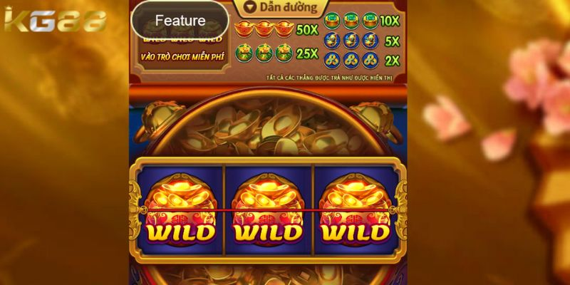
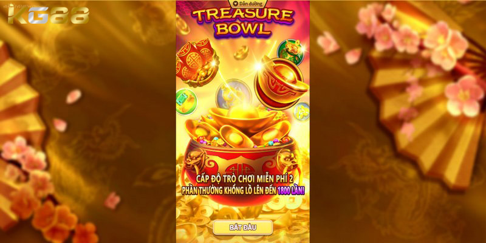
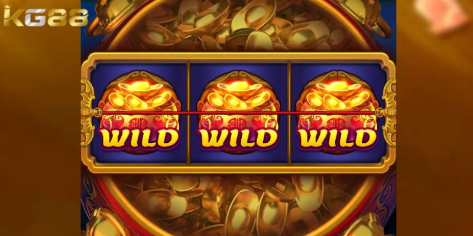
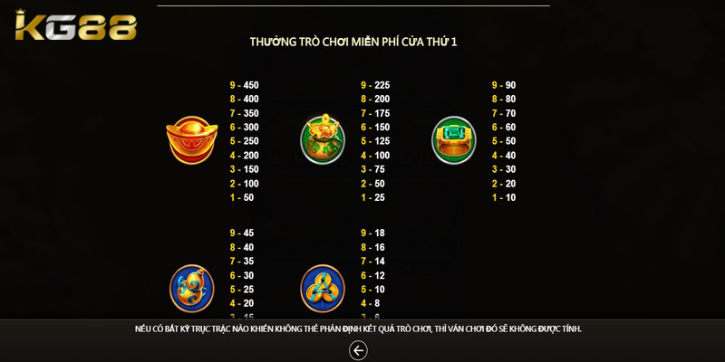

NỔ HŨ KG88
Bật Mí Mẹo Chơi Bát Châu Báu Chắc Thắng Rinh Thưởng Khủng
POSTED ON THÁNG SÁU 27, 2024 BY ADMINKG88

Giới thiệu game nổ hũ Bát Châu Báu
Trước khi đi vào tìm hiểu mẹo chơi bát châu báu hãy đi tìm hiểu khái niệm của trò chơi. Được biết đến là một trong những tựa game slot tại KG88 thu hút đông đảo người chơi. Trò chơi này tương tự như các trò săn tìm kho báu để trở thành vua.

Giới thiệu game nổ hũ Bát Châu Báu hấp dẫn
Người chơi có thể thu thập kho báu và né tránh những kho báu cấp cao hơn để không bị “ăn”. Những viên châu báu cùng cấp độ không thể ăn nhau. Ví dụ: Châu báu cấp 15 chỉ có thể ăn cấp 14, nhưng hai viên cấp 15 thì không thể hợp thành.
Khi tham gia trò chơi này tại KG88, người chơi sẽ quay hũ và khởi động các guồng quay để xác định kết quả thắng thua trong từng phiên chơi. Cách chơi đơn giản nhưng đầy kịch tính này đã thu hút đông đảo người chơi. Mỗi lần quay hũ đều mang đến cơ hội nhận được những phần thưởng hấp dẫn, khi giá trị của các hũ thưởng được tích lũy liên tục, tạo ra những phần thưởng ngày càng lớn hơn.
Luật chơi, mẹo chơi game bát châu báu là gì?
Hiện tại, Bát Châu Báu đang trở thành điểm đến lý tưởng cho những ai yêu thích cảm giác hồi hộp và mong muốn săn lùng các giải thưởng giá trị. Với hình ảnh hấp dẫn, lối chơi lôi cuốn và cơ hội trúng thưởng cao, Bát Châu Báu đang giữ vững vị thế của mình như một trong những trò chơi nổ hũ hàng đầu trên thị trường game trực tuyến.
Bạn đang chuẩn bị tham gia vào thế giới kỳ thú của Bát Châu Báu đúng không? Trước khi bắt đầu cuộc hành trình, hãy cùng nhau tìm hiểu về luật và mẹo chơi bát châu báu để có thể tận hưởng trò chơi một cách trọn vẹn vẹn nhất..
Biểu tượng WILD
Trong game nổ hũ này, biểu tượng WILD được biết đến là nó có khả năng thay thế bất kỳ biểu tượng nào khác. Chỉ cần biểu tượng WILD xuất hiện trên dòng cược là bạn đã giành được chiến thắng.

Mẹo chơi bát châu báu sử dụng biểu tượng Wild
Quy định về mua giá trị
Người chơi có thể kích hoạt ngay lập tức trò chơi và tham gia bằng cách mua với giá trị 75 lần số tiền cược tổng hiện tại trong trò chơi cơ bản. Người chơi cũng có quyền từ bỏ trạng thái của trò chơi nổi bật để tiếp tục chơi như bình thường.
Nhận phần thưởng khủng khi chơi bát châu báu
Khi có 3 biểu tượng WILD xuất hiện liên tiếp thì người chơi sẽ nhận thêm 15 lượt quay miễn phí. Đây là một trong những biểu tượng xuất hiện ngẫu nhiên trên bất kỳ guồng quay nào của hũ Bát Châu Báu.
Dòng cược thắng như thế nào?
Một tổ hợp chiến thắng hợp lệ tức là khi tạo ra khi có 3 biểu tượng giống nhau liên tiếp theo chiều dọc hoặc chiều ngang. Thành viên tham gia cần phải đặt cược ít nhất 1 điểm trên 3 cuộn để quay thưởng.
Mẹo chơi bát châu báu và hướng dẫn cách quay hũ
Trước mỗi vòng quay hũ, người chơi có thể điều chỉnh hạn mức tiền cược sao cho phù hợp với ngân sách của mình. Các mệnh giá đã được thiết lập sẵn, người chơi chỉ cần chọn mức cược mong muốn.
Sau khi điều chỉnh xong, người chơi nhấn vào nút “Quay” để khởi động các guồng quay. Các biểu tượng trên guồng quay sẽ thay đổi liên tục cho đến khi dừng lại hoàn toàn. Hệ thống sẽ xác định kết quả dựa trên các tổ hợp biểu tượng hợp lệ. Nếu người chơi đạt được tổ hợp yêu cầu, tiền thưởng sẽ được cộng vào tài khoản ngay lập tức.
Mẹo chơi bát châu báu để nổ hũ lớn lụm tiền liền tay
Thực tế, sảnh game nổ hũ này có lối chơi khá đơn giản, phù hợp với hầu hết mọi người chơi hiện nay. Tuy nhiên, anh em không nên chủ quan để tránh rủi ro thua lỗ lớn. Vì vậy, hãy học hỏi thêm những kinh nghiệm quan trọng dưới đây để quay hũ hiệu quả:

Mẹo chơi bát châu báu để nổ hũ lớn lụm tiền liền tay
- Mẹo chơi bát châu báu người chơi cần tìm hiểu kỹ về các hạn mức thưởng và tổ hợp biểu tượng trong sảnh game Bát Châu Báu. Từ đó, có thể xây dựng chiến lược quay hũ đổi thưởng chi tiết và tối ưu hiệu suất.
- Luôn giữ cho bản thân một cái đầu lạnh trong mọi tình huống, tuyệt đối không được tất tay. Tốt nhất, người chơi nên phân chia nguồn vốn hiện có một cách hợp lý, tránh hành động vội vàng.
- Mẹo chơi bát châu báu nếu người chơi thường xuyên thua lỗ khi quay hũ, nên dừng chơi ngay lập tức. Điều này sẽ giúp ổn định tâm lý và xem xét nguyên nhân thua lỗ đến từ đâu.
Trên đây là toàn bộ thông tin về Mẹo chơi bát châu báu mà chúng tôi muốn gửi đến bạn đọc. Hãy tham gia quay hũ để tận hưởng những phút giây giải trí đầy thú vị ngay hôm nay. Chúc bạn thật nhiều may mắn và có cơ hội nhận được những khoản tiền thưởng vô cùng hấp dẫn từ nhà cái.
BÀI VIẾT MỚI